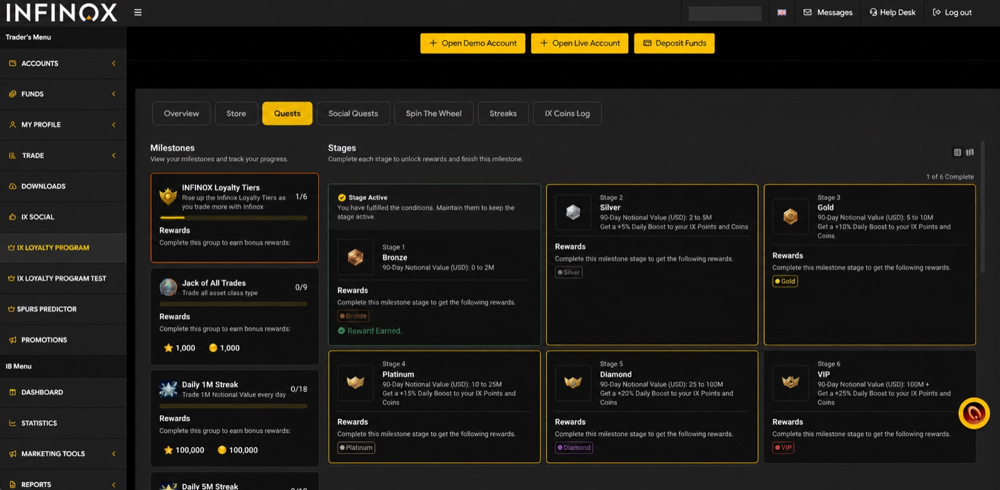
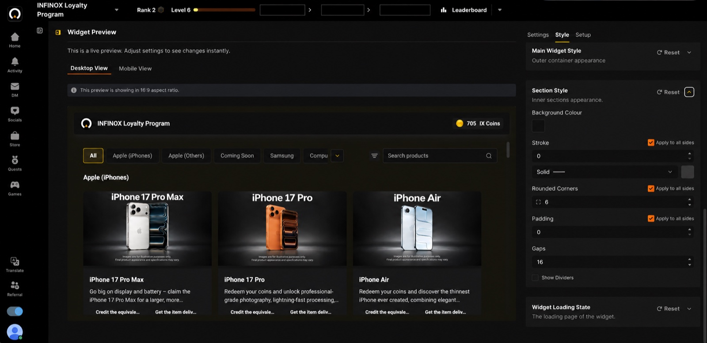
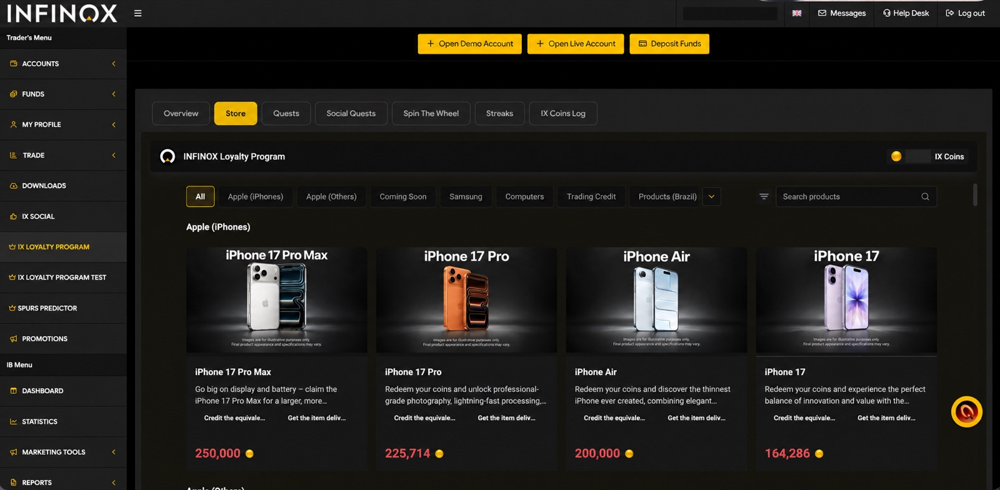
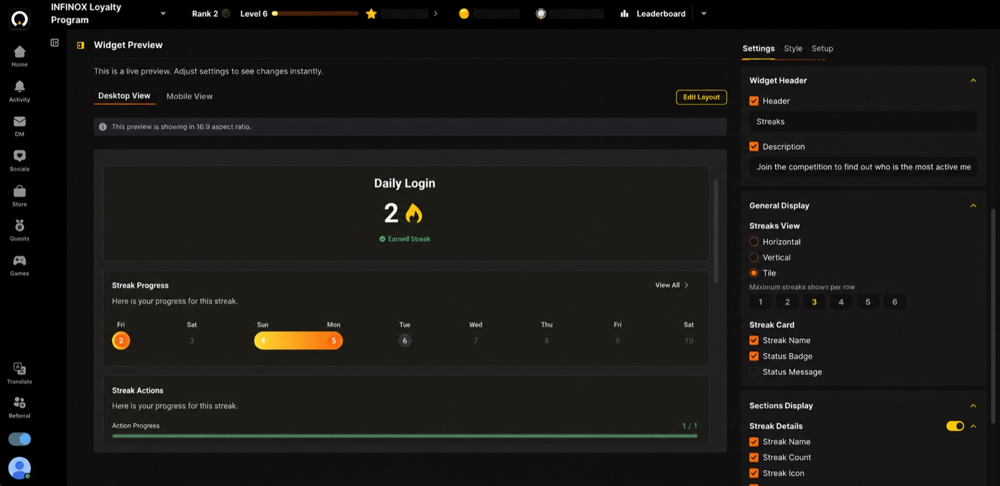
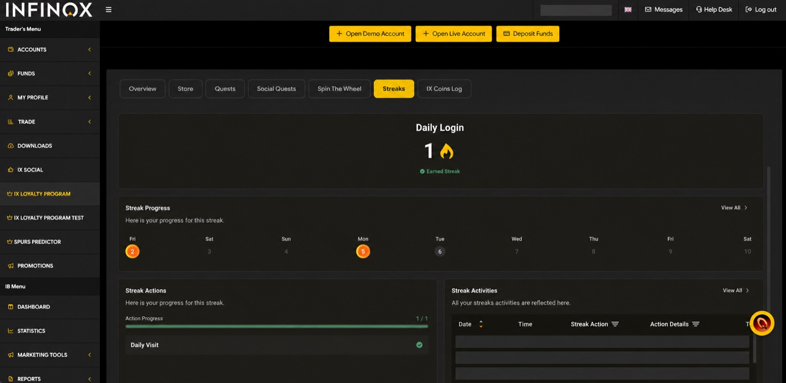
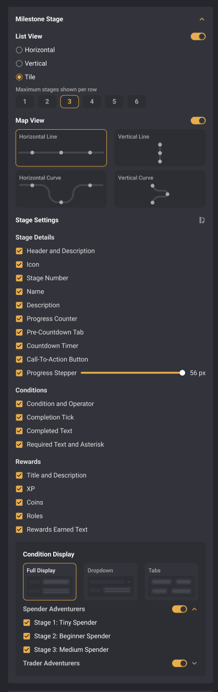
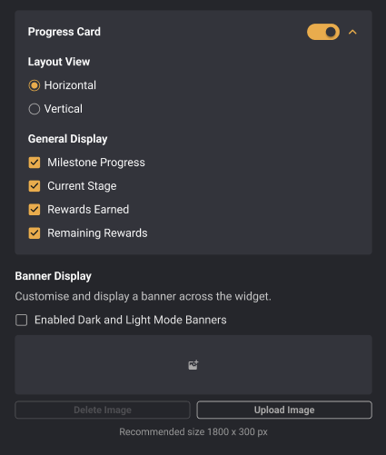
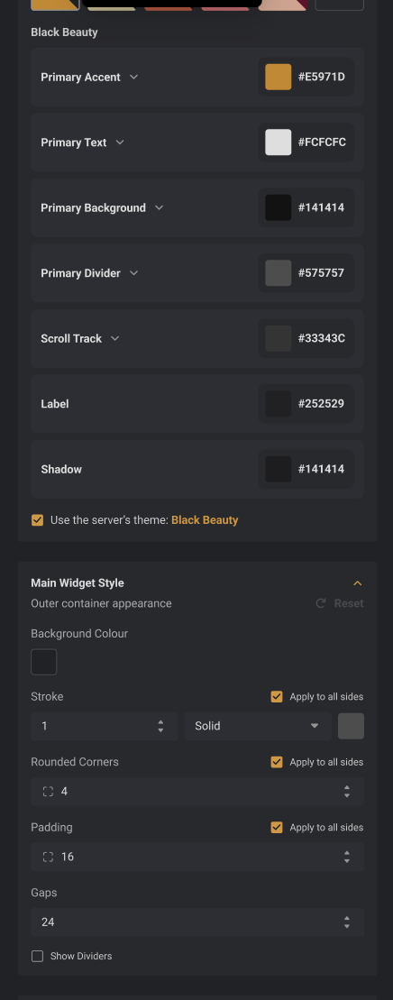
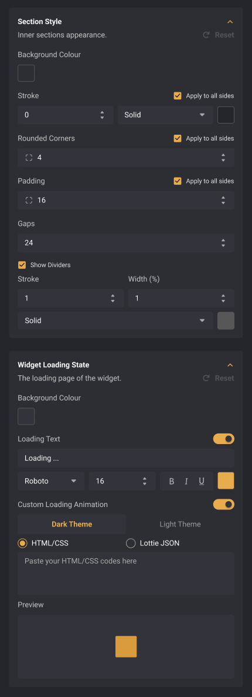
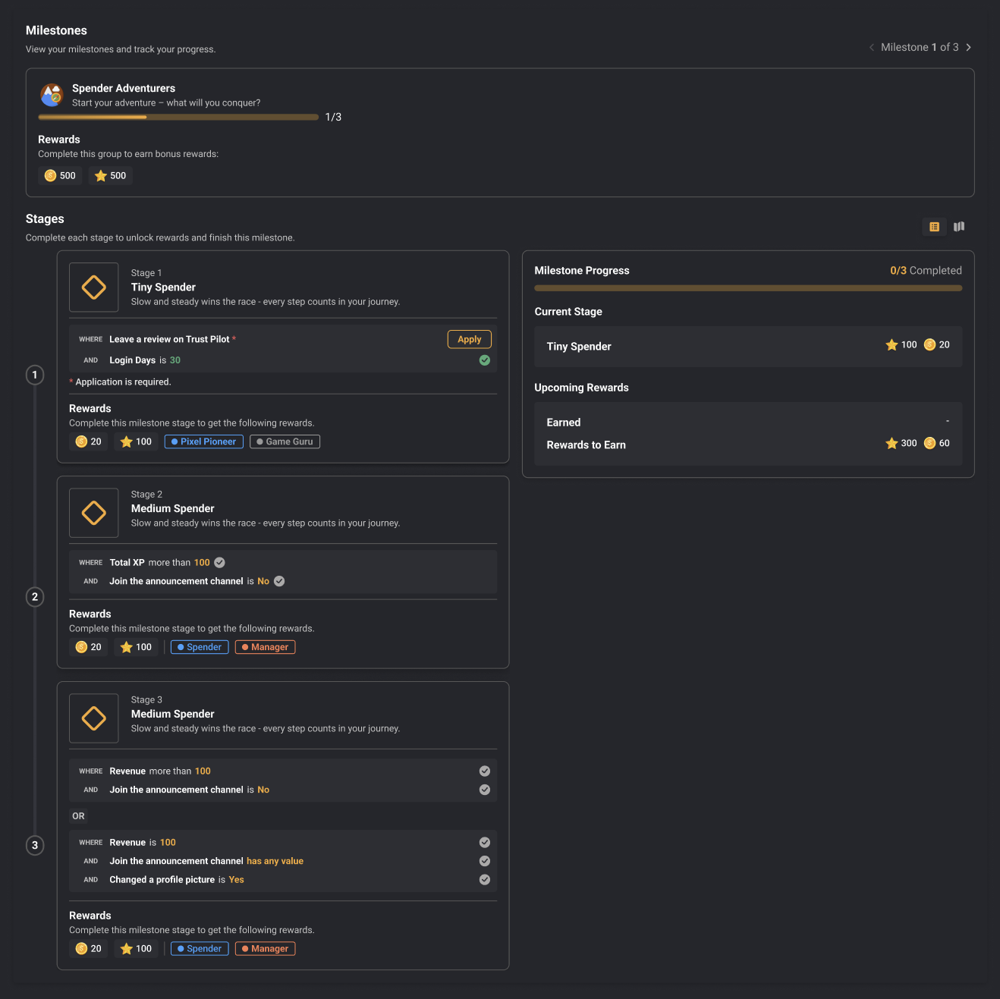

Milestones through the systemChoose a layer

Select a layer to bring its evidence forward.
Scope and evidence. I originated the concept, designed the system and built the working local implementation; Wai Yan reviewed the code. The screenshots verify visible product states, not rollout, adoption or business impact. Client-identifying account details have been removed.
One widget, two brands.
Product logic stays intact. Each client controls the visual language, information density and layout.
Live sandbox preview. Different test users may show different progress; the comparison demonstrates configuration and portable delivery, not adoption or business impact.
Built once. Shaped for the client.
The operator sees controls. The client sees a focused feature that belongs in their portal. Compare the two surfaces across Store, Milestones and Streaks.
Store
Style controls become a branded reward catalogue.
Operators tune the surface, spacing and structure. Traders receive a catalogue that sits naturally inside INFINOX navigation.


Milestones
One surface system carries a dense progression model.
Widget and section styling adapt to the brand while milestone groups, active stages and reward relationships remain legible.
Streaks
Layout and visibility choices shape the habit loop.
Operators choose the presentation and details. Traders receive a focused daily-progress experience instead of the configuration behind it.


Platform decision
The widget adapts. The feature stays in charge.
Clients need flexibility, but copying feature values into every embed would create a second source of truth. I separated product authority from presentation.
- Product decisionExpose only meaningful choices
Selection, visibility, layout and brand-safe styling—not arbitrary CSS or fabricated states.
- System behaviorInherit live values until an override exists
Reset removes the exception and returns the widget to the current feature value.
- User outcomeA client-ready experience without logic drift
The portal can look native while eligibility, progress and rewards keep their original meaning.
The original design covered every reasonable client request. That was the clue.
The Milestones configurator was intentionally granular: choose groups, arrange stages, reveal conditions and rewards, change surfaces, and define the loading state. It solved client variation—but rebuilding that logic for every feature took too long.
- Selection
- Layout
- Groups
- Stages
- Conditions
- Rewards
- Progress
- Theme
- Loading
Selection, layout and groups
Stages, conditions and rewards

Progress card and banner

Theme and main widget surface

Section surface and loading state


Scroll the left control rail. Use the corner control to inspect any image.
I turned repeated configuration work into a reviewable AI workflow.
The skill drafts the recurring structure, but it does not pretend every feature is identical. A designer still reviews feature meaning, exceptions, source authority and proof.
- InspectRead the feature and closest approved pattern
- DraftPropose Settings, Style and Setup controls
- ReviewResolve feature-specific decisions with a human
- ProveImplement the requested checkpoint and test it
Working local prototype
Try the workflow when you want the detail—not before.
The public simulation uses a deterministic Spin the Wheel fixture. It sends nothing, saves nothing and makes no external change.
You
Turn Spin the Wheel into a configurable widget.
Widget ConfiguratorDraft ready for review
- Settings content, behavior and visibility
- Style theme, surfaces and loading state
- Setup delivery and embed requirements
The lasting design